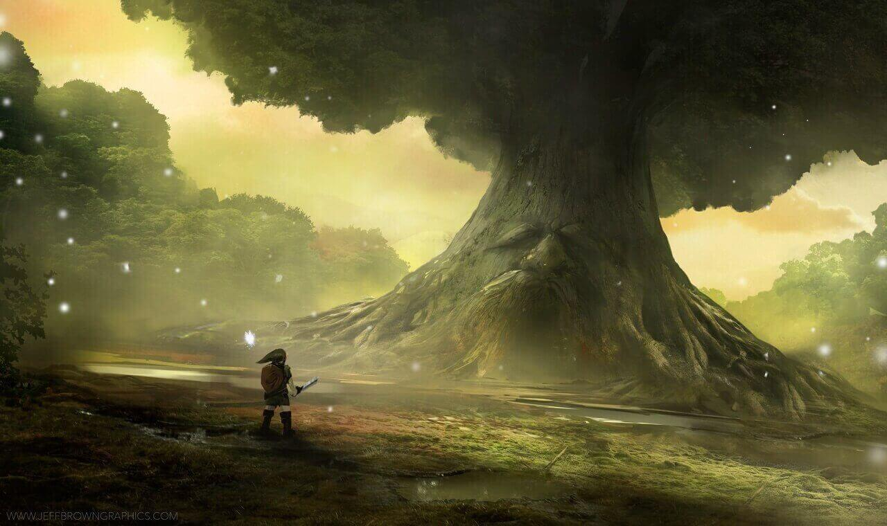

Retourner à la page d'accueil
Attribution des médias utilisés
Les images décrit le travail d'un jeu vidéo protégé par le droit d'auteur ou d'un matériel protégé par le droit d'auteur.
Les images on été redimensionnés selon les besoins du projet.
Toutes les images appartiennent à Nintendo et/ou ses affiliés ou aux personnes qui ont développé le concept.
Ce quiz à été crée dans le cadre du programme des Techniques d'intégration multimédia au Cégep de Sainte-Foy.
Ce projet a été réalisé dans un cadre scolaire et n'est pas officiellement affilié avec Nintendo. Ce projet n'est pas utilisé pour générer du profit.
Les images

Fichier modifié - 417x105 JPEG et 680x170 JPEG
Fichier original - 1,366 × 768 pixels, file size: 883 KB, MIME type: image/png
Link en train d'apprendre la mélodie Zelda's Lullaby dans Ocarina of Time
Image de Nintendo dans le jeu The Legend of Zelda: Ocarina of Time via http://zelda.wikia.com

Permission d'utilisation de l'art par son créateur le 30 novembre 2018
Formats utilisés - 800x1280 JPEG, 1280x760 JPEG et 2560x1520 JPEG
Format original - 3000x1845 JPG
The Great Deku Tree Fanart ©2015-2018 jbrown67
Art réalisé par Jeff Brown de http://jeffbrowngraphics.com/ via
DevianArt
Les icones
Triforce by Kervin Markle from the Noun Project
gem by Anthony Ledoux from the Noun Project
Pouch by Hea Poh Lin from the Noun Project
Retourner à la page d'accueil

{kind=link}
{kind=link}
{kind=link}
{kind=link}
{kind=link}
{kind=link}
{kind=link}
{kind=link}
{kind=link}
{kind=link}
{kind=link}
{kind=link}